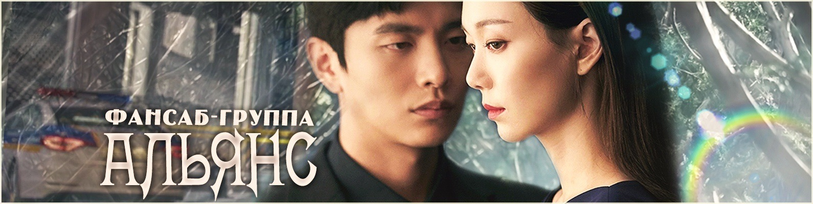

Фансаб-группа АЛЬЯНС умеют все,
есть разные группы по интересам, но выходы
не такие частые, как хотелось бы.
Дата основания и основная информация
Началом пути данной группы считается 25 октября 2008 года.
За 12 лет Альянс завершила 410 проектов(корейские дораы),
305 проктов(японские дорамы), 54 проктов(ТВ-дорамы),
132 проекта(тайские дорамы), 203 фильма(корейсого производства),
214 фильмов(японского производства), 3 реалити-шоу и многое другое.
На данные момент активно 23 проекта,
и лишь 46 находятся в статусе "заморожен".
